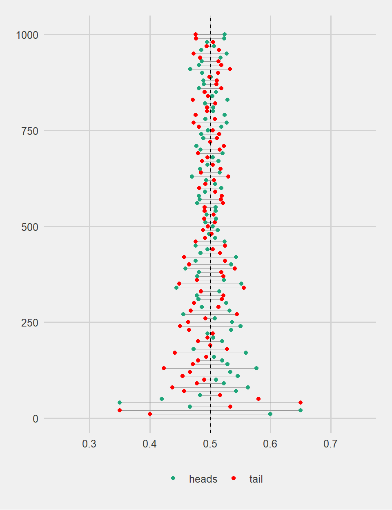
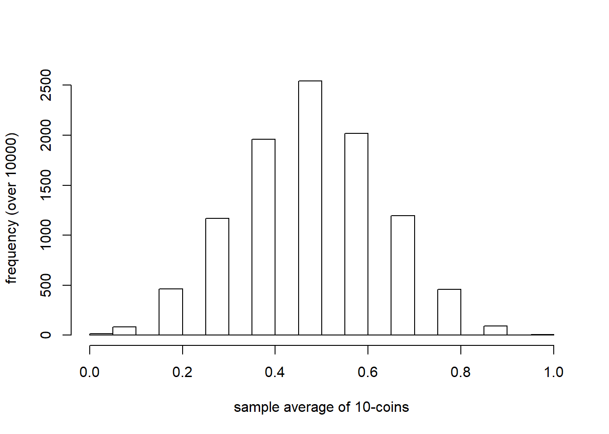

Week 3 Prob-Stat Review
3.0.1 Goals
- Briefly review the concepts related to probability theory and statistics that we will frequently use in this class.
- Briefly review how to infer meaningful information about the population using random samples.
3.0.2 Flipping a coin
Task: Define the mutually exclusive outcomes for flipping a coin and flip the coin one time.
Answer:
## [1] "heads"3.0.3 Probability
Task: Show that if you repeat the exercise many times (e.g. 1000), the coin will come up heads roughly half of the time. That is P(head) = 0.5
Answer:
## event.outcome
## heads tail
## 469 531DIFFICULT answer:
lln <- function (X){
outcome.set <- c("heads","tail")
event.outcome <- replicate(X, sample(outcome.set, 1))
y1 <- as.data.frame(event.outcome) %>%
mutate(trials=X)
return(y1)
}
out1 <- do.call(rbind.data.frame,lapply(seq(10,1000,10), lln)) %>%
group_by(trials, event.outcome) %>%
count() %>%
mutate(frac=n/trials)
g1 <- ggplot(data=out1, aes(x=trials,y=frac, colour=event.outcome)) +
geom_segment(aes(x = trials,y = frac, xend = trials, yend = 1-frac), size = 0.3, colour='#969696') +
geom_point(size=1.5) +
geom_hline(yintercept = 0.5, colour='black', linetype='dashed', size=0.5) +
ylim(0.25, 0.75) +
theme_fivethirtyeight() +
coord_flip() +
scale_colour_manual(name='', values = c('#1FA67A','red')) +
labs(x = "number of coins flipped", y = "fraction of heads and tails") +
theme(legend.position="bottom")
plot(g1)
3.0.4 Expected value and variance
Task: Define a random variable X = {0,1} through assigning zero to heads and 1 to tails. Calculate the expected value, variance, and the standard deviation of the random variable X: \(\mu=E[X]=\sum_iX_iP(X_i)\) and \(\sigma^2=E[(X-\mu)^2]=\sum_i[(X_i-\mu)^2 P(X_i)]\)
Answer:
#define an empty matrix 2 by 6
df1 <- matrix(NA, nrow = 2, ncol = 6)
#transform this to a data set (easier to work with)
df1 <- as.data.frame(df1)
#change the col names
names(df1) <- c("outcome", "X", "P(X)", "X.P(X)", "X-E[X]", "(X-E[X])^2.P(X)")
#define the outcomes
df1$outcome <- c("heads", "tail")
#define values assigned to each outcome
df1$X <- c(0,1)
#define the associated probabilities
df1$`P(X)` <- c(0.5,0.5)
#weight each outcome with the assigned probability
df1$`X.P(X)` <- df1$X * df1$`P(X)`
#calculate the expexted value
mu.x <- sum(df1$`X.P(X)`)
#calculate the dev. from mean for each outcome
df1$`X-E[X]` <- df1$X - mu.x
#weight the squared dev. from mean by the assigned probability
df1$`(X-E[X])^2.P(X)` <- (df1$`X-E[X]`)^2 * df1$`P(X)`
#calculate the variance
var.x <- sum(df1$`(X-E[X])^2.P(X)`)
#std. dev
sigma.x <- sqrt(var.x)
#show the filled data set
df1 ## outcome X P(X) X.P(X) X-E[X] (X-E[X])^2.P(X)
## 1 heads 0 0.5 0.0 -0.5 0.125
## 2 tail 1 0.5 0.5 0.5 0.125## [,1]
## mu.x 0.50
## var.x 0.25
## sigma.x 0.503.0.5 Law of Large Numbers
Formally, the sample average, \(\bar{x}\), will almost surely converge in probablity to \(\mu\) as \(N \rightarrow \infty\). In practice, here is what it looks like.
Task: Define the random variable X={0,1} as previously described. Flip the coin for an increasing number of times, n={1,2,3….,1000}, and calculate the average of each sample. Interpret the expected value.
Answer: Law of Large Numbers (LLN) theorem predicts that if an experiment is repeated many times the average outcome should be very close to the expected value, observe how difference between the observed sample average and expected value approach each other as the number of coins that we experiment with increases. Expected value is therefore the long run average of a random variable.
flips <- function(n,p,x1,x2) {
out1 <- sample(x=c(x1,x2), prob = c(p,1-p), size=n, replace = TRUE)
n.sample <- n
mean.sample <- sum(out1)/n
sd.sample <- sqrt(sum((out1-mean.sample)^2)/n)
out2 <- cbind(mean.sample, n.sample, sd.sample)
return(out2)
}
df1 <- do.call(rbind.data.frame,lapply(1:1000, flips,p=0.5,x1=0,x2=1))
p1 <- ggplot(df1, aes(x=n.sample,y=mean.sample)) +
theme_tufte() +
geom_line() +
geom_hline(yintercept = 0.5, colour='grey', linetype='dashed') +
labs(x = "number of coins flipped", y = "outcome mean") +
transition_reveal(n.sample) +
view_follow() +
xlim(1,1000 ) +
ylim(0.0,1.0)
animate(p1, nframes=200, fps=5)3.0.6 Central limit theorem
CLT is a fundamental tool in data analysis, there are many versions with similar implications. We will demonstrate a simple one. Formally, assume that you have an identically and independently distributed random variable X. Notice that the shape of its outcome distibution does not matter.
You draw a random sample of \(N\) observations through repeated experimentation such as \(\{X_1,X_2,..,X_n\}\). Assume that you are interested in the sample average \(\bar{X}=\dfrac{X_1+X_2+...+X_n}{n}\). CLT states that, no matter what the initial distribution of X is, the sample average of X can be approximated with a normal distribution with mean \(\mu\) and standard deviation \(\dfrac{\sigma}{\sqrt{n}}\) for sufficiently large \(n\). Here is how it works.
Task: Flip 10 coins using random variable X={0,1} as defined before and calculate the sample average \(\bar{X}\).
Answer:
#define your sample size=10
n <- 10
#define the number times that you want to repeat the experiment r=1000
r <- 1000
#define the possible outcomes X={0,1}
x1 <- 0
x2 <- 1
#define the probabilities for each outcome
p1 <- 0.5
p2 <- 0.5
#now run the experiment
exp.outcome <- sample(x=c(x1,x2), prob=c(p1,p2), size=10, replace=TRUE)
exp.outcome## [1] 0 1 0 1 0 0 0 1 0 0## [1] 0.3Task: Repeat the 10-coin experiment many times (e.g. ~ 10,000) and calculate the average of outcomes for each experiment. Graph a frequency histogram of these averages, that is the distribution of \(\bar{X}\).
HARD answer:
#write a small function
f.coins <- function(n) {
sample.n <- sample(x=c(0,1), prob=c(0.5,0.5), size=n, replace=TRUE)
mean.sample <- mean(sample.n)
return(mean.sample)
}
#now try if it is working
f.coins(10)## [1] 0.7## [1] 0.5 0.5 0.3 0.6 0.5 0.6#now plot
hist.df1 <- hist(df1, xlab='sample average of 10-coins', ylab='frequency (over 10000)',main='')
Task: Gradually increase your sample size from 10 to 100 and plot the frequency distribution of \(\bar{X}\) with increasing \(n\).